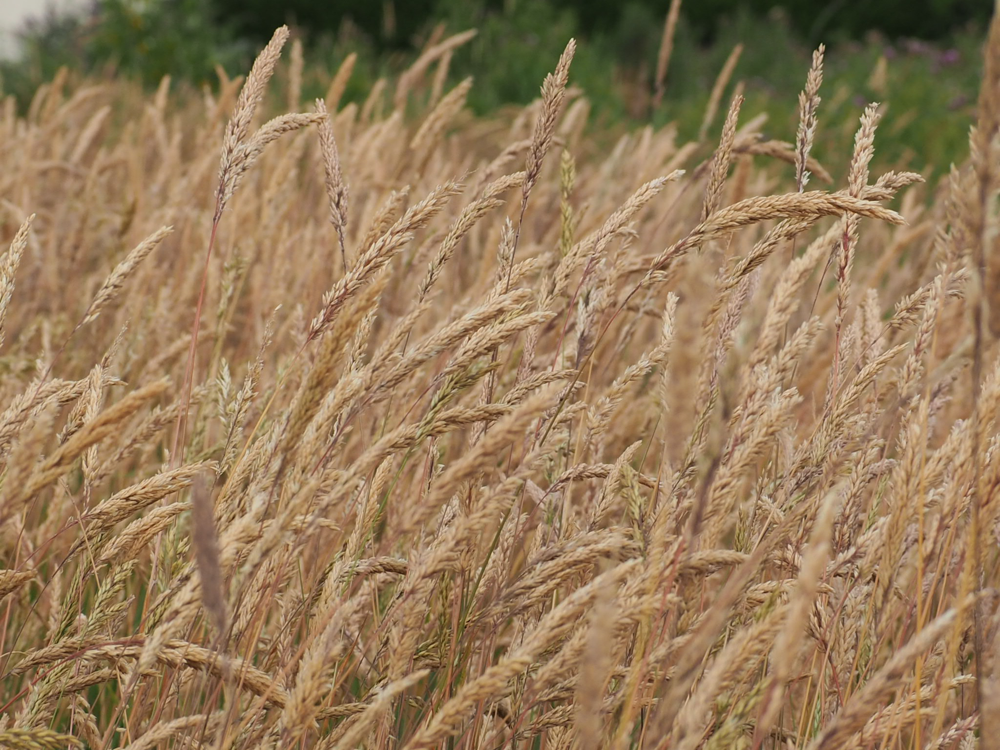
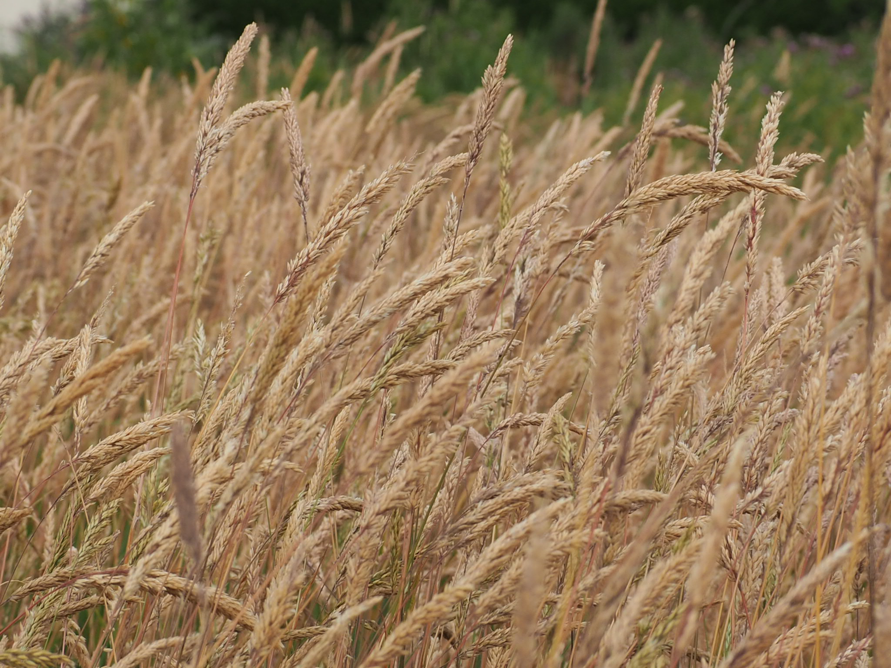
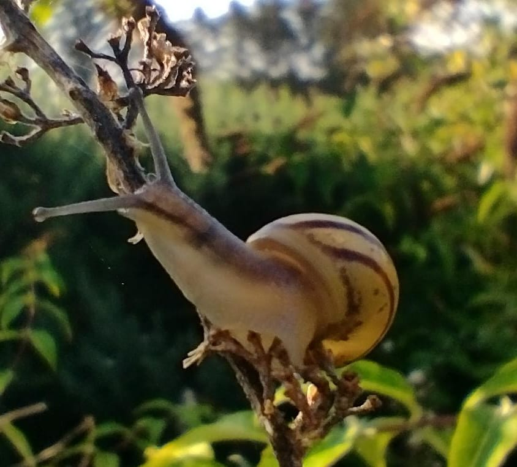
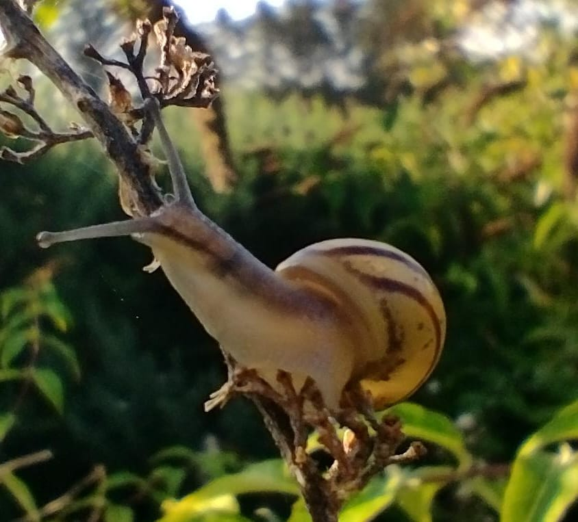
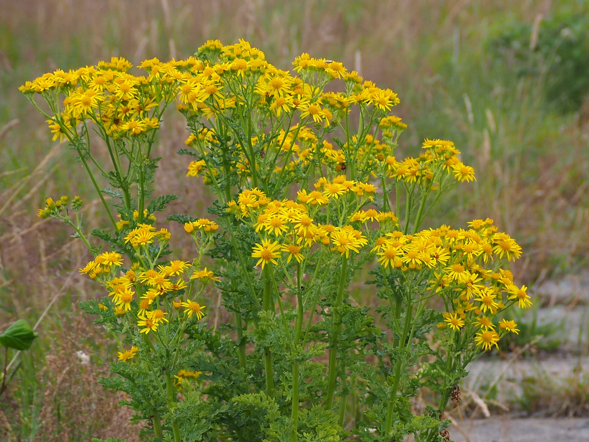
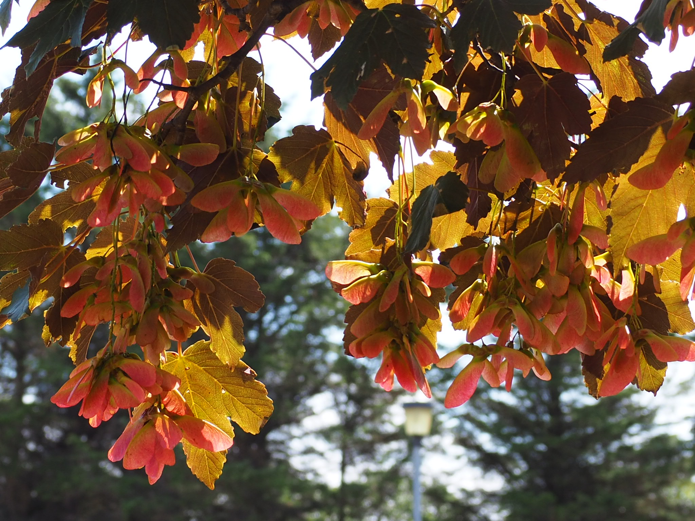
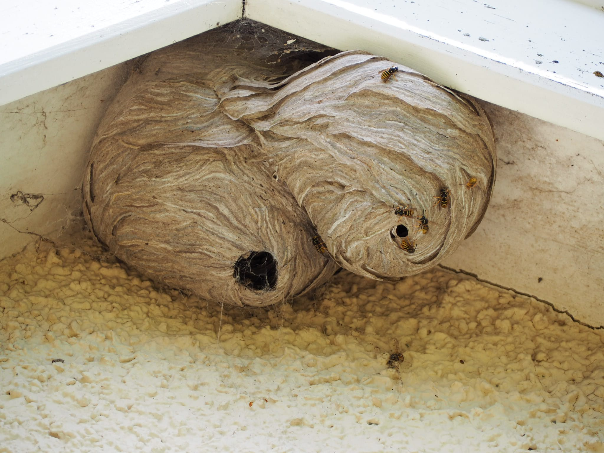

This is an attempt (in progress) to list most of the species living on or
visiting the Corrunna Moor and provide their photographs taken on the moor.
The list is, of course, far from complete. Cataloguing plants is somehow a
boring task, while taking pictures of some animals is challenging. On the other
hand investigating birds has been great fun and the still growing collection
has been moved to the separate page:
Birds.
Beware that
my identification of species can be inaccurate and pictures are often of not so
good quality.
Alder
Along the border with Corunna Road there is a group of young
alders growing quickly and expanding into a small woodland.

Ant
There are several species of ants on the moor. The picture
below was taken on the corner of the tarmac path.
Bee
With the bees in global decline, seeing one is like a step to the old good past. There must be
a few kinds of bees on the moor, but I don't dare to try to identify them. I haven't found
a nest yet.
Bird vetch
One of many plants flowering in the summer.

Blackberry
There are plenty of bramble bushes almost everywhere on the moor.
They produce a lot of fruit which is ripe in the second half of
the summer. Sweet when very ripe and plentiful.

Buddleia
Grows mostly along the path of the moor close to Corunna Road
and together with alders form a small woodland full of birds
and frequently visited by deer. Flowering in most of summer
attracts butterflies, bumblebees and other insects feeding
on nectar.

Bumblebee
Very common on most parts of the moor with flowering plants.

Burrying beetle
Seen once in August, 2023.
Caterpillar
There are many caterpillars on the moor and they are larvae of moths. The one on
the pictures is probably
ruby tiger . The pictures were taken in October.
Common blue
One of several kinds of butterflies. Not so common to spot on the moor.

Cotoneaster
A distinctive bush in the middle of the moor close to the end
of the concrete slab path. Flowering in the summer and full of beautiful
red fruits throughout the autumn. Many of the pictures of birds
on this website were taken there.


Creeping thistle
An ubiquitous weed on the moor.

Cross spider
Also known as European garden spider or cross orbweaver. It is common on the moor at the end of August
and stays there throughout September. Spans its webs between the branches of gorse, sometimes across
paths.
Curly dock
Dark green fritillary
Not so common butterfly.

Fox
Occasional visitors, especially in winter. The picture below was taken on March 25, 2022.
Interestingly, my cats were not scared of the fox and the fox were not scared of them (and
of me too). They seem to chase each other.

Fox-and-cubs

Gorse
The defining plant of the moor covering most of its area.
It is spectacular in the blooming season in the spring and summer
(see photo). Home to hedgehogs and rodents as well as to deer, which
with an amazing skill can jump through the thorny bush.


Grass (many species)
I don't even attempt to list all the grass species. Most of it is
spectacular in the summer. Below just a glimpse on its diversity.


 



Grasshopper
Mainly heard and also seen most of the summer all over the moor.
Hedgehog
A common nocturnal mammal on the moor, relatively easy to spot in summer early nights.

Hummingbird hawk-moth
A rarity seen once on August 9, 2023. As the name suggest it is a moth that resembles
a hummingbird.
Leopard slug
Quite a big slug. The once I saw on the moor were more than 10cm long.
Meadow brown
Yet another not so frequently seen butterfly. I saw it once only. The picture
was taken on June 25, 2022.

Meadow froghopper
If you see a "spit" on a stem of a thistle of a grass then it is a nest of a small
insect.
Pellucid fly
I have seen this insect a few times only. Certainly not as common as bumblebee or
a wasp.

Peacock butterfly
A very common butterfly, frequently seen on the flowers of buddleia.

Red admiral
Another common butterfly seen often on the buddleia flowers.
Roe deer
A frequent visitor that sometimes stays on the moor for days. In the early summer can be seen
together with the young. The way and speed with which they can go through the gorse is incredible.

Rowan tree
The most beautiful in September when its fruits are red on the green background of its leaves.

Sitka spruce
The 166 spruces form one of the most distinctive parts
of the area, the woodland between the moor and the golf course.
Home and feeding place to many birds and, allegedly, a red
squirrel. The picture on the left shows the biggest tree
which is also the easiest place to spot swarms of goldfinches
feeding on ripe cones in the end of summer. The picture on the
right is a very young tree that will hopefully take over more
land.


Slime mold
One of the most interesting creatures on the planet.
What you see on this picture is a one cell organism that can actually move, using its pseudopods,
in search for food.

Snail
Ubiquitous on the moor. Appear in abundance in the spring and summer. Mostly in grass, although,
they climb stems and branches of various plants.
 

Snowberry
A bush at the end of the concrete slab path. A shelter for many small birds together with
the neighbouring cotoneaster form a nice bird sanctuary.

Squirrel
What you see on the picture is a strange feeder installed by people from
Saving Scotland's Red Squirrels.
It is a squirrel feeder and in order to get to the corn a squirrel has to lift the
lid. Underneath the lid is a piece of gluing tape to catch squirrels fur. This is
how they know that a squirrel was there. I check it frequently and as far as I can
tell, there wasn't. However, I saw one a few years ago crossing my garden.

Stinking willie
Supposedly a very invasive weed.

Tatar maple
A neighbour of the rowan tree at the entrance to the moor. Keeps its beautiful leaves
long into autumn.

Thistle
It is Scotland after all...

Tiger moth (protected)
Our greatest treasure. The only protected species I could identify so far. Incredibly beautiful.
No words are needed... The picture was taken on July 5, 2022; the caterpillar
was seen on April 29 and June 6, 2023.

Wasp
A very common and not so liked insect. Notice wasps chewing various wooden surfaces.
They use wood mixed with saliva to build nests.
The pictures below shows two nests under the roof of a garage. I also saw a nest in the
ground.


{kind=link}
{kind=link}
{kind=link}
{kind=link}
{kind=link}
{kind=link}
{kind=link}
{kind=link}
{kind=link}
{kind=link}
{kind=link}
{kind=link}
{kind=link}
{kind=link}
{kind=link}
{kind=link}
{kind=link}
{kind=link}
{kind=link}
{kind=link}
{kind=link}
{kind=link}
{kind=link}
{kind=link}